공조냉동기계기사(구) (2015-08-16 기출문제)
1과목: 기계열역학
1. 밀폐계 안의 유체가 상태 1에서 상태 2로 가역압축 될 때, 하는 일을 나타내는 식은? (단, P는 압력, V는 체적, T는 온도이다.)
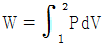
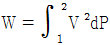
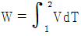
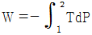
(정답률: 70%)

2. 마찰이 없는 피스톤에 12℃, 150kPa의 공기 1.2kg이 들어 있다. 이 공기가 600kPa로 압축되는 동안 외부로 열이 전달되어 온도는 일정하게 유지되었다. 이 과정에서 공기가 한 일은 약 얼마인가? (단, 공기의 기체상수는 0.287kJ/kgㆍK이며, 이상기체로 가정한다.)
- -136kJ
- -100kJ
- -13.6kJ
- -10kJ
(정답률: 59%)
3. 1kg의 헬륨이 100kPa 하에서 정압 가열되어 온도가 300K에서 350K로 변하였을 때 엔트로피의 변화량은 몇 kJ/K인가? (단, h = 5.238T의 관계를 갖는다. 엔탈피 h의 단위는 kJ/kg, 온도 T의 단위는 K이다.)
- 0.694
- 0.756
- 0.807
- 0.968
(정답률: 40%)
4. 폴리트로프 변화를 표시하는 식 PVn = C에서 n = k일 때의 변화는? (단, k는 비열비이다.)
- 등압변화
- 등온변화
- 등적변화
- 가역단열변화
(정답률: 65%)
5. 냉동용량이 35kW인 어느 냉동기의 성능계수가 4.8이라면 이 냉동기를 작동하는데 필요한 동력은?
- 약 9.2kW
- 약 8.3kW
- 약 7.3kW
- 약 6.5kW
(정답률: 70%)
6. 어떤 시스템이 변화를 겪는 동안 주위를 엔트로피가 5kJ/K 감소하였다. 시스템의 엔트로피 변화는?
- 2 kJ/K 감소
- 5kJ/K 감소
- 3 kJ/K 증가
- 6kJ/K 증가
(정답률: 61%)
7. 500℃와 20℃의 두 열원 사이에 설치되는 열기관이 가질 수 있는 최대의 이론 열효율은 약 몇 % 인가?
- 4
- 38
- 62
- 96
(정답률: 64%)
8. 어느 내연기관에서 피스톤의 흡기과정으로 실린더 속에 0.2kg의 기체가 들어 왔다. 이것을 압축할 때 15kJ의 일이 필요하였고, 10kJ의 열을 방출하였다고 하면, 이 기체 1kg당 내부에너지의 증가량은?
- 10kJ
- 25kJ
- 35kJ
- 50kJ
(정답률: 71%)
9. 피스톤 실린더로 구성된 용기안에 300kPa, 100℃ 상태의 CO2가 0.2m3 들어 있다. 이 기체를 “PV1.2 = 일정”인 관계가 만족되도록 피스톤 위에 추를 더해가며 온도가 200℃가 될 때까지 압축하였다. 이 과정 동안 기체가 한 일을 구하면? (단, CO2의 기체상수는 0.189kJ/kgㆍK이다.)
- -20kJ
- -60kJ
- -80kJ
- -120kJ
(정답률: 42%)
10. 8℃의 이상기체를 가역 단열 압축하여 그 체적을 1/5로 줄였을 때 기체의 온도는 몇 ℃인가? (단, k = 1.4이다.)
- 313℃
- 295℃
- 262℃
- 222℃
(정답률: 61%)
11. 압력이 0.2MPa, 온도가 20℃의 공기를 압력이 2MPa로 될 때까지 가역단열 압축했을 때 온도는 약 몇(℃)인가? (단, 비열비 k = 1.4이다.)
- 225.7℃
- 273.7℃
- 292.7℃
- 358.7℃
(정답률: 63%)
12. 처음의 압력이 500kPa이고, 체적이 2m3인 기체가 “PV = 일정”인 과정으로 압력이 100kPa까지 팽창할 때 밀폐계가 하는 일(kJ)을 나타내는 식은?
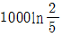
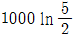
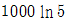
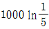
(정답률: 56%)
13. 효율이 40%인 열기관에서 유효하게 발생되는 동력이 110kW라면 주위로 방출되는 총 열량은 약 몇 kW인가?
- 375
- 165
- 155
- 110
(정답률: 60%)
14. 카르노 사이클(Carnot cycle)로 작동되는 기관의 실린더 내에서 1kg의 공기가 온도 120℃에서 열량 40kJ를 얻어 등온팽창 한다고 하면 엔트로피의 변화는 얼마인가?
- 0.102kJ/kgㆍK
- 0.132kJ/kgㆍK
- 0.162kJ/kgㆍK
- 0.192kJ/kgㆍK
(정답률: 61%)
15. Otto사이클에서 열효율이 35%가 되려면 압축비를 얼마로 하여야 하는가? (단, k = 1.3이다.)
- 3.0
- 3.5
- 4.2
- 6.3
(정답률: 63%)
16. 직경 20cm, 길이 5m인 원통 외부에 두께 5cm의 석면이 씌워져 있다. 석면 내면과 외면의 온도가 각각 100℃, 20℃이면 손실되는 열량은 약 몇 kJ/h인가? (단, 석면의 열 전도율은 0.418kJ/mㆍh ㆍ℃로 가정한다.)
- 2591
- 3011
- 3431
- 3851
(정답률: 37%)
17. 물 1kg이 압력 300kPa에서 증발할 때 증가한 체적이 0.8m3이었다면, 이때의 외부 일은? (단, 온도는 일정하다고 가정한다.)
- 140kJ
- 240kJ
- 320kJ
- 420kJ
(정답률: 67%)
18. 과열, 과냉이 없는 이상적인 증기압축 냉동사이클에서 증발온도가 일정하고 응축온도가 내려 갈수록 성능계수는?
- 증가한다.
- 감소한다.
- 일정하다.
- 증가하기도 하고 감소하기도 한다.
(정답률: 64%)
19. 공기표준 Brayton 사이클에 대한 설명 중 틀린 것은?
- 단순 가스터빈에 대한 이상사이클이다.
- 열교환기에서의 과정은 등온과정으로 가정한다.
- 터빈에서의 과정은 가역 단열팽창과정으로 가정한다.
- 터빈에서 생산되는 일의 40% 내지 80%를 압축기에서 소모한다.
(정답률: 46%)
20. 순수물질의 압력을 일정하게 유지하면서 엔트로피를 증가시킬 때 엔탈피는 어떻게 되는가?
- 증가한다.
- 감소한다.
- 변함없다.
- 경우에 따라 다르다.
(정답률: 54%)
2과목: 냉동공학
21. 불응축가스가 냉동장치에 미치는 영향이 아닌 것은?
- 체적효율 상승
- 응축압력 상승
- 냉동능력 감소
- 소요동력 증대
(정답률: 71%)
22. 응축기에 관한 설명으로 옳은 것은?
- 횡형 셸 앤 튜브식 응축기의 관내 수속은 5m/s가 적당하다.
- 공랭식 응축기는 기온의 변동에 따라 응축능력이 변하지 않는다.
- 입형 셸 앤 튜브식 응축기는 운전 중에 냉각관의 청소를 할 수 있다.
- 주로 물의 감열로서 냉각하는 것이 증발식 응축기이다.
(정답률: 67%)
23. 냉매 순환량이 100kg/h인 압축기의 압축효율이 75%, 기계효율이 93%, 압축일 량이 50kcal/kg일 때 축동력은?
- 4.7kW
- 6.3kW
- 7.8kW
- 8.3kW
(정답률: 47%)
24. 수냉식 냉동장치에서 응축압력이 과다하게 높은 경우로 가장 거리가 먼 것은?
- 냉각 수량 과다
- 높은 냉각수 온도
- 응축기 내 불결한 상태
- 장치 내 불응축가스가 존재
(정답률: 64%)
25. 저온용 단열재의 성질이 아닌 것은?
- 내구성 및 내약품성이 양호할 것
- 열전도율이 좋을 것
- 밀도가 작을 것
- 팽창계수가 작을 것
(정답률: 73%)
26. 열펌프(heat pump)의 성적계수를 높이기 위한 방법으로 가장 거리가 먼 것은?
- 응축온도와 증발온도와의 차를 줄인다.
- 증발온도를 높인다.
- 응축온도를 높인다.
- 압축동력을 줄인다.
(정답률: 58%)
27. 유분리기에 대한 설명으로 가장 거리가 먼 것은?
- 만액식 증발기를 사용하거나 증발온도가 높은 경우에 설치한다.
- 압축기에서 응축기ㅣ까지의 배관이 긴 경우에 설치한다.
- 왕복식 압축기인 경우 고압냉매의 맥동을 완하시키는 역할을 한다.
- 일종의 소음기 역할도 한다.
(정답률: 46%)
28. 스테판-볼츠만(Stefan-Boltzmann)의 법칙과 관계있는 열 이동 현상은?
- 열 전도
- 열 대류
- 열 복사
- 열 통과
(정답률: 72%)
29. 다음 그림과 같은 몰리에르 선도 상에서 압축냉동 사이클의 각 상태점에 있는 냉매의 상태 설명 중 틀린 것은?
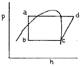
- a점의 냉매는 팽창 밸브 직전의 과냉각된 냉매액
- b점은 감압되어 응축기에 들어가는 포화액
- c점은 압축기에 흡입되는 건포화 증기
- d점은 압축기에서 토출되는 과열 증기
(정답률: 64%)
30. 내부지름이 2cm이고 외부지름이 4cm인 강철관을 3cm 두께의 석면으로 씌웠다면 관의 단위 길이 당 열손실은? (단, 관 내부 온도 600℃, 석면 바깥 면 온도 100℃, 관 열전도도 16.34kcal/mㆍhㆍ℃, 석면 열전도도 0.1264kcal/mㆍhㆍ℃이다.)
- 430.8kcal/mㆍhㆍ℃
- 472.5kcal/mㆍhㆍ℃
- 486.5kcal/mㆍhㆍ℃
- 510.5kcal/mㆍhㆍ℃
(정답률: 28%)
31. 10냉동톤의 능력을 갖는 역카르노 사이클 냉동기의 방열온도가 25℃, 흡열온도가 –20℃이다, 이 냉동기를 운전하기 위하여 필요한 이론 마력은?
- 9.3PS
- 14.6PS
- 15.3PS
- 17.3PS
(정답률: 53%)
32. 다음과 같은 카르노 사이클에서 옳은 것은?
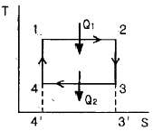
- 면적 1-2-3'-4' 급열 Q1을 나타낸다.
- 면적 4-3-3'-4'는 Q1-Q2를 나타낸다.
- 면적 1-2-3-4는 방열 Q2를 나타낸다.
- Q1, Q2는 면적과는 무관하다.
(정답률: 63%)
33. 왕복동식 압축기의 체적효율이 감소하는 이유로 적합한 것은?
- 단열 압축지수의 감소
- 압축비의 감소
- 극간비의 감소
- 흡입 및 토출밸브에서의 압력손실의 감소
(정답률: 30%)
34. 몰리에르 선도를 통해 알 수 없는 것은?
- 냉동능력
- 성적계수
- 압축비
- 압축효율
(정답률: 55%)
35. 다음 사이클로 작동되는 압축기의 피스톤 압출량이 180m3/h, 체적효율(ηv)이 0.75, 압축효율(ηc)이 0.78, 기계효율(ηm)이 0.9일 때, 이 압축기의 소요동력은?
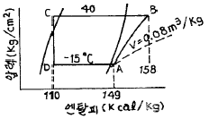
- 11.5kW
- 15.8kW
- 21.6kW
- 30.2kW
(정답률: 43%)
36. 냉동기유의 구비조건으로 틀린 것은?
- 점도가 적당할 것
- 응고점이 높고 인화점이 낮을 것
- 유성이 좋고 유막을 잘 형성할 수 있을 것
- 수분 및 산류 등의 불순물이 적을 것
(정답률: 69%)
37. 다음 그림은 단효용 흡수식 냉동기에서 일어나는 과정을 나타낸 것이다. 각 과정에 대한 설명으로 틀린 것은?
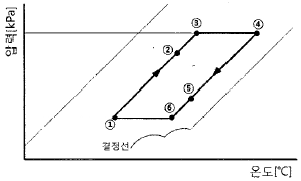
- ①→②과정 : 재생기에서 돌아오는 고온 농용액과 열교환에 의한 희용액의 온도상승
- ②→③과정 : 재생기 내에서 비등점에 이르기까지의 가열
- ③→④과정 : 재생기 내에서의 가열에 의한 냉매 응축
- ④→⑤과정 : 흡수기에서의 저온 희용액과 열교환에 의한 농용액의 온도강하
(정답률: 60%)
38. 증발 및 응축압력이 각각 0.8kg/cm2, 20kg/cm2인 2단 압축 냉동기에서 최적 중간압력은?
- 4kg/cm2
- 10kg/cm2
- 16kg/cm2
- 20kg/cm2
(정답률: 56%)
39. 냉동장치의 운전 중 압축기에 이상음이 발생했다. 그 원인으로 가장 적합한 것은?
- 크랭크케이스 내 유량이 감소하고 유면이 하한까지 낮아지고 있다.
- 실린더에 서리가 끼고 액백 현상이 일어나고 있다.
- 고압은 그다지 높지 않지만 저압이 높고 전동기의 전류는 전부하로 운전되고 있다.
- 유압펌프의 토출압력은 압축기의 흡입압력보다 높게 운전되고 있다.
(정답률: 66%)
40. 냉동사이클에서 응축온도 상승에 의한 영향과 가장 거리가 먼 것은? (단, 증발온도는 일정하다.)
- COP 감소
- 압축기 토출가스 온도 상승
- 압축비 증가
- 압축기 흡입가스 압력 상승
(정답률: 65%)
3과목: 공기조화
41. 온풍난방의 특징으로 틀린 것은?
- 연소장치, 송풍장치 등이 일체로 되어 있어 설치가 간단하다.
- 예열부하가 거의 없으므로 기동시간이 짧다.
- 토출 공기온도가 높으므로 쾌적도는 떨어진다.
- 실내 층고가 높을 경우에는 상하의 온도차가 작다.
(정답률: 65%)
42. 주철제 보일러의 장점으로 틀린 것은?
- 강도가 높아 고압용에 사용된다.
- 내식성이 우수하며 수명이 길다.
- 취급이 간단하다.
- 전열면적이 크고 효율이 좋다.
(정답률: 64%)
43. 다음 중 개별식 공조방식의 특징이 아닌 것은?
- 국소적인 운전이 자유롭다.
- 개별제어가 자유롭게 된다.
- 외기냉방을 할 수 없다.
- 소음진동이 작다.
(정답률: 38%)
44. 고속 덕트의 설계법에 관한 설명 중 틀린 것은?
- 동력비가 증가된다.
- 송풍기 동력이 과대해진다.
- 공조용 덕트는 소음의 고려가 필요하지 않다.
- 리턴 덕트와 공조기에서는 저속방식과 같은 풍속으로 한다.
(정답률: 73%)
45. 극간풍을 방지하는 방법이 아닌 것은?
- 회전문 설치
- 자동문 설치
- 에어 커튼 설치
- 충분한 간격을 두고 이중문 설치
(정답률: 66%)
46. 공조설비의 구성은 열원설비, 열운반장치, 공조기, 자동제어장치로 이루어진다. 이에 해당하는 장치로서 직접적인 관계가 없는 것은?
- 펌프
- 덕트
- 스프링클러
- 냉동기
(정답률: 71%)
47. 건구온도 38℃, 절대습도 0.022kg/kg인 습공기 1kg의 엔탈피는? (단, 수증기의 정압비열은 0.44kcal/kgㆍ℃이다.)
- 38.19kJ/kg
- 55.02kJ/kg
- 66.56kJ/kg
- 94.75kJ/kg
(정답률: 28%)
48. 냉수코일 계산 시 관 1개당 통과 권장 냉수량은?
- 6 ~ 16L/min
- 25 ~ 30L/min
- 35 ~ 40L/min
- 46 ~ 56L/min
(정답률: 60%)
49. 콘크리트 두께 10cm, 내면 회벽 두께 2cm의 벽체를 통하여 실내로 침입하는 열량은? (단, 외기온도 30℃, 실내온도 26℃, 콘크리트 열전도율 1.4kcal/mㆍhㆍ℃, 회벽 열전도율 0.62kcal/mㆍhㆍ℃, 벽 외면 열전달율 20kcal/m2ㆍhㆍ℃, 벽 내면 열전달율 7kcal/m2ㆍhㆍ℃, 외벽의 면적 20m2이다.)
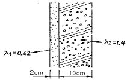
- 178.1kcal/h
- 269.8kcal/h
- 326.9kcal/h
- 378.2kcal/h
(정답률: 60%)
50. 보일러 능력의 표시법에 대한 설명으로 옳은 것은?
- 과부하 출력 : 운전시간 24시간 이후에는 정격 출력의 10~20% 더 많이 출력되는데 이것을 과부하 출력이라 한다.
- 정격 출력 : 정미출력의 2배이다.
- 상용 출력 : 배관 손실을 고려하여 정미 출력의 약 1.⑤~1.10배 정도이다.
- 정미 출력 : 연속해서 운전할 수 있는 보일러의 최대능력이다.
(정답률: 58%)
51. 공조기에서 냉ㆍ온풍을 혼합댐퍼(mixing damper)에 의해 일정한 비율로 혼합한 후 각 존 또는 각 실로 보내는 공조방식은?
- 단일덕트 재열 방식
- 멀티존 유닛 방식
- 단일덕트 방식
- 유인 유닛 방식
(정답률: 64%)
52. 실내 냉방부하가 현열 6000kcal/h, 잠열 1000kcal/h인 실의 송풍량은? (단, 취출 온도차 10℃, 공기비중량 1.2kg/m3, 비열 0.24kcal/kgㆍ℃이다.)
- 1538 CMH
- 2083 CMH
- 3180 CMH
- 4200 CMH
(정답률: 53%)
53. 다음 중 열회수 방식에 속하는 것은?
- 열병합방식
- 빙축열방식
- 승온이용방식
- 지역냉난방방식
(정답률: 45%)
54. 한 장의 보통 유리를 통해서 들어오는 취득열량을 q = IGR × Ks × Ag + IGC ×Ag라 할 때 Ks를 무엇이라 하는가? (단, IGR : 일사투과량, Ag : 유리의 면적, IGC : 창면적당의 내표면으로부터 대류에 의하여 침입하는 열량)
- 차폐계수
- 유리의 반사율
- 유리의 열전도계수
- 단위시간에 단위면적을 통해 투과하는 열량
(정답률: 64%)
55. 방열기의 EDR은 무엇을 의미하는가?
- 상당방열면적
- 표준방열면적
- 최소방열면적
- 최대방열면적
(정답률: 63%)
56. 감습장치에 대한 설명으로 틀린 것은?
- 냉각 감습장치는 냉각코일 또는 공기세정기를 사용하는 방법이다.
- 압축성 감습장치는 공기를 압축해서 여분의 수분을 응축시키는 방법이며, 소요동력이 적기 때문에 일반적으로 널리 사용된다.
- 흡수식 감습장치는 트리에틸렌글리콜, 염화리튬 등의 액체 흡수제를 사용하는 것이다.
- 흡착식 감습장치는 실리카겔, 활성알루미나 등의 고체 흡착제를 사용한다.
(정답률: 49%)
57. 다음 중 공기여과기(air filter) 효율 측정법이 아닌 것은?
- 중량법
- 비색법(변색도법)
- 계수법(DOP법)
- HEPA 필터법
(정답률: 65%)
58. 다음 열원설비 중 하절기 피크전력 감소에 기여할 수 있는 방식으로 가장 거리가 먼 것은?
- GHP 방식
- 빙축열 방식
- 흡수식 냉동기
- EHP 방식
(정답률: 50%)
59. 건물의 지하실, 대규모 조리장 등에 적합한 기계환기법(강제급기 + 강제배기)은?
- 제1종 환기
- 제2종 환기
- 제3종 환기
- 제4종 환기
(정답률: 69%)
60. 덕트에 설치되는 댐퍼에 대한 설명으로 틀린 것은?
- 버터플라이 댐퍼는 주로 소형덕트에서 개폐용으로 사용되며 풍량 조절용으로도 사용된다.
- 평형익형 댐퍼는 닫혔을 때 공기의 누설이 많다.
- 방화 댐퍼의 종류는 루버형, 피봇형 등이 있다.
- 풍량 조절 댐퍼의 종류에는 슬라이드형과 스윙형이 있다.
(정답률: 48%)
4과목: 전기제어공학
61. 내부저항 r인 전류계의 측정범위를 n배로 확대하려면 전류계에 접속하는 분류기 저항값은?
- r/n
- r/(n-1)
- (n-1)r
- nr
(정답률: 64%)
62. PLC가 시퀀스동작을 소프트웨어적으로 수행하는 방법으로 틀린 것은?
- 래더도 방식
- 사이클릭 처리방식
- 인터럽트 우선 처리방식
- 병행 처리방식
(정답률: 51%)
63. 다음 중 정상 편차를 개선하고 응답속도를 빠르게 하는 동작은?
- K
- K(1+sT)
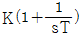
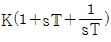
(정답률: 63%)
64. 목표치가 시간에 관계없이 일정한 경우로 정전압 장치, 일정 속도제어 등에 해당하는 제어는?
- 정치제어
- 비율제어
- 추종제어
- 프로그램제어
(정답률: 56%)
65. 조작부를 움직이는 에너지원으로 공기, 유압, 전기 등을 사용하는 것은?
- 정치제어
- 타력제어
- 자력제어
- 프로그램제어
(정답률: 59%)
66. 콘덴서에서 극판의 면적을 3배로 증가시키면 정전 용량은 어떻게 되는가?
- 1/3로 감소한다.
- 1/9로 감소한다.
- 3배로 증가한다.
- 9배로 증가한다.
(정답률: 49%)
67. 4극 60Hz의 3상 유도전동기가 있다. 1725rpm으로 회전하고 있을 때 2차 기전력의 주파수는 약 몇 Hz인가?
- 2.5
- 7.5
- 52.5
- 57.5
(정답률: 22%)
68. 유도전동기의 회전력은 단자전압과 어떤 관계를 갖는가?
- 단자 전압에 반비례한다.
- 단자 전압에 비례한다.
- 단자 전압의 1/2승에 비례한다.
- 단자 전압의 2승에 비례한다.
(정답률: 43%)
69. 제어계에서 적분요소에 해당되는 것은?
- 물탱크에 일정 유량의 물을 공급하여 수위를 올린다.
- 트랜지스터에 저항을 접속하여 전압증폭을 한다.
- 마찰계수, 질량이 있는 스프링에 힘을 가하여 그 변위를 구한다.
- 물탱크에 열을 공급하여 물의 온도를 올린다.
(정답률: 47%)
70. RLC 병렬회로에서 용량성 회로가 되기 위한 조건은?
- XL = XC
- XL ＞ XC
- XL ＜ XC
- XL + XC = 0
(정답률: 45%)
71. 온도를 임피던스로 변환시키는 요소는?
- 측온 저항
- 광전지
- 광전 다이오드
- 전자석
(정답률: 68%)
72. 3상 유도전동기에서 일정 토크 제어를 위하여 인버터를 사용하여 속도제어를 하고자 할 때 공급전압과 주파수의 관계는?
- 공급전압이 항상 일정하여야 한다.
- 공급전압과 주파수는 반비례되어야 한다.
- 공급전압과 주파수는 비례되어야 한다.
- 공급전압의 제곱에 비례하여야 한다.
(정답률: 46%)
73. 전류에 의해서 발생되는 작용이라고 볼 수 없는 것은?
- 발열 작용
- 자기차폐 작용
- 화학 작용
- 자기 작용
(정답률: 50%)
74. 그림과 같은 회로에서의 논리식은?
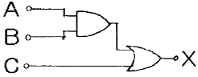
- X = (A + B)ㆍC
- X = AㆍB + C
- X = AㆍB + AㆍC
- X = AㆍBㆍC
(정답률: 59%)
75. 유입식 변압기의 절연유 구비조건이 아닌 것은?
- 절연내력이 클 것
- 응고점이 높을 것
- 점도가 낮고 냉각효과가 클 것
- 인화점이 높을 것
(정답률: 63%)
76. 200V의 정격전압에서 1kW의 전력을 소비하는 저항에 90%의 정격전압을 가한다면 소비전력은 몇 W인가?
- 640
- 810
- 900
- 990
(정답률: 49%)
77. 피드백 제어의 장점으로 틀린 것은?
- 제어기 부품들의 성능이 나쁘면 큰 영향을 받는다.
- 외부조건의 변화에 대한 영향을 줄일 수 있다.
- 제어계의 특성을 향상시킬 수 있다.
- 목표값을 정확히 달성할 수 있다.
(정답률: 64%)
78. 다음 논리식 중에서 그 결과가 다른 값을 나타낸 것은?
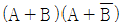
- Aㆍ(A + B)
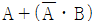
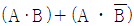
(정답률: 54%)
79. 피상전력 100kVA, 유효전력 80kW인 부하가 있다. 무효전력은 몇 kVar인가?
- 20
- 60
- 80
- 100
(정답률: 54%)
80. 어떤 제어계의 임펄스 응답이 sinωt 일 떄 계의 전달함수는?
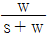
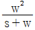
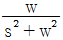
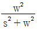
(정답률: 59%)
5과목: 배관일반
81. 방열기 트랩에 대한 설명으로 틀린 것은?
- 방열기 내에 머무는 공기만을 제거시켜 배관의 순환을 빠르게 한다.
- 방열기 내에 생긴 응축수를 보일러에 환수시키는 역할을 한다.
- 방열기 밸브의 반대쪽 하부 태핑에 부착한다.
- 증기가 환수관에 유출되지 않도록 한다.
(정답률: 40%)
82. 체크밸브의 종류에 대한 설명으로 옳은 것은?
- 리프트형 – 수평, 수직 배관용
- 풋형 – 수평 배관용
- 스윙형 – 수평, 수직 배관용
- 리프트형 – 수직 배관용
(정답률: 56%)
83. 증기난방용 방열기를 열손실이 가장 많은 창문 쪽의 벽면에 설치할 때 가장 적절한 벽면과의 거리는?
- 5~6cm
- 10~11cm
- 19~20cm
- 25~26cm
(정답률: 67%)
84. 증기배관에 관한 설명으로 틀린 것은?
- 수평주관의 지름을 줄일 때에는 편심 리듀서를 사용한다.
- 수평주관의 지름을 줄일 때에는 응축수가 이음부에 체류하지 않도록 내림구배는 관 밑을 직선으로 일치시킨다.
- 증기주관 위쪽에서의 입하관 분기는 상향으로 올린 후에 올림구배로 입하시킨다.
- 증기관이나 환수관이 장애물과 교차할 대는 드레인이나 공기가 유통하기 쉽도록 한다.
(정답률: 50%)
85. 온수난방 배관시공시 기울기에 관한 설명으로 틀린 것은?
- 배관의 기울기는 일반적으로 1/250 이상으로 한다.
- 단관 중력 순환식의 온수 주관은 하향 기울기를 준다.
- 복관 중력 순환식의 상향 공급식에서는 공급관, 복귀관 모두 하향기울기를 준다.
- 강제 순환식은 상향기울기나 하향기울기 어느 쪽이든 자유로이 할 수 있다.
(정답률: 61%)
86. 배관 관련 설비 중 공기조화 설비의 구성요소로 가장 거리가 먼 것은?
- 열원장치
- 공기조화기
- 환기장치
- 트랩장치
(정답률: 64%)
87. 배관작업용 공구에 관한 설명으로 틀린 것은?
- 파이프 리머(pipe reamer) : 관을 파이프커터 등으로 절단한 후 관 담녀의 안쪽에 생긴 거스러미(burr)를 제거
- 플레어링 툴(flaring tools) : 동관을 압축이음하기 위하여 관 끝을 나팔모양으로 가공
- 파이프 바이스(pipe vice) : 관을 절단하거나 나사이음을 할 때 관이 움직이지 않도록 고정
- 사이징 툴(sizing tools) : 동일지름의 관을 이음쇠 없이 납땜이음을 할 때 한 쪽 관 끝을 소켓모양으로 가공
(정답률: 66%)
88. 배관계가 축 방향 힘과 굽힘에 의한 회전력을 동시에 받을 때 사용하는 신축 이음쇠는?
- 슬리브형
- 볼형
- 벨로즈형
- 루프형
(정답률: 53%)
89. 통기관의 설치목적과 가장 거리가 먼 것은?
- 배수의 흐름을 원활하게 하여 배수관의 부식을 방지한다.
- 봉수가 사이펀 작용으로 파괴되는 것을 방지한다.
- 배수계통 내의 신선한 공기를 유입하기 위해 환기시킨다.
- 배수계통 내의 배수 및 공기의 흐름을 원활하게 한다.
(정답률: 46%)
90. 배관의 보온재 선택방법에 관한 설명으로 틀린 것은?
- 대상온도에 충분히 견딜 수 있을 것
- 방수ㆍ방습성이 우수할 것
- 가볍고 시공성이 좋을 것
- 열 전도율이 클 것
(정답률: 75%)
91. 팽창수조에 대한 설명으로 틀린 것은?
- 개방식 팽창수조의 설치높이는 장치의 최고 높은 곳에서 1m 이상으로 한다.
- 팽창관에는 밸브를 반드시 설치하여야 한다.
- 팽창수조는 물의 팽창ㆍ수축을 흡수하기 위한 장치이다.
- 밀폐식 팽창수조는 가압상태를 확인할 수 있도록 압력계를 설치하여야 한다.
(정답률: 70%)
92. 다음 중 배수의 종류가 아닌 것은?
- 청수
- 오수
- 잡배수
- 우수
(정답률: 71%)
93. 가스 공급방식 중 저압 공급방식의 특징으로 틀린 것은?
- 가정용ㆍ상업용 등 일반에게 공급되는 방식이다.
- 홀더압력을 이용해 저압배관만으로 공급하므로 공급계통이 비교적 간단하다.
- 공급구역이 좁고 공급량이 적은 경우에 적합하다.
- 가스의 공급압력은 0.3 ~ 0.5MPa 정도이다.
(정답률: 68%)
94. 배관지지 장치에서 변위가 큰 개소에 사용하는 행거는?
- 리지드 행거
- 콘스탄트 행거
- 베이러블 행거
- 스프링 행거
(정답률: 46%)
95. 다음 보기에서 설명하는 급수공급 방식은?
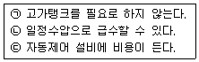
- 층별식 급수 조닝방식
- 고가수조방식
- 압력수조방식
- 부스터방식
(정답률: 57%)
96. LP가스 공급, 소비 설비의 압력손실 요인으로 틀린 것은?
- 배관의 입하에 의한 압력손실
- 엘보우, 티 등에 의한 압력손실
- 배관의 직관부에서 일어나는 압력손실
- 가스미터, 콕크, 밸브 등에 의한 압력손실
(정답률: 57%)
97. 배관계통 중 펌프에서의 공동현상(cavitation)을 방지하기 위한 대책으로 해당되지 않는 것은?
- 펌프의 설치 위치를 낮춘다.
- 회전수를 줄인다.
- 양 흡입을 단 흡입으로 바꾼다.
- 굴곡부를 적게 하여 흡입관의 마찰 손실수두를 작게 한다.
(정답률: 73%)
98. 덕트의 구부러진 부분의 기류를 안정시키기 위해 사용하는 것은?
- 방화 댐퍼(fire damper)
- 가이드 베인(guide vane)
- 라인 디퓨저(line diffuser)
- 스플릿 댐퍼(split damper)
(정답률: 70%)
99. 급탕온도가 80℃, 복귀탕 온도가 60℃일 때 온수 순환펌프의 수량은? (단, 배관 중의 총 손실 열량은 6000kcal/h로 한다.)
- 5L/min
- 10L/min
- 20L/min
- 25L/min
(정답률: 55%)
100. 스트레이너의 형상에 따른 종류가 아닌 것은?
- Y형
- S형
- U형
- V형
(정답률: 63%)